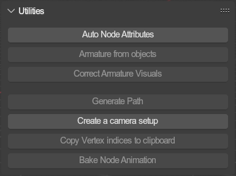
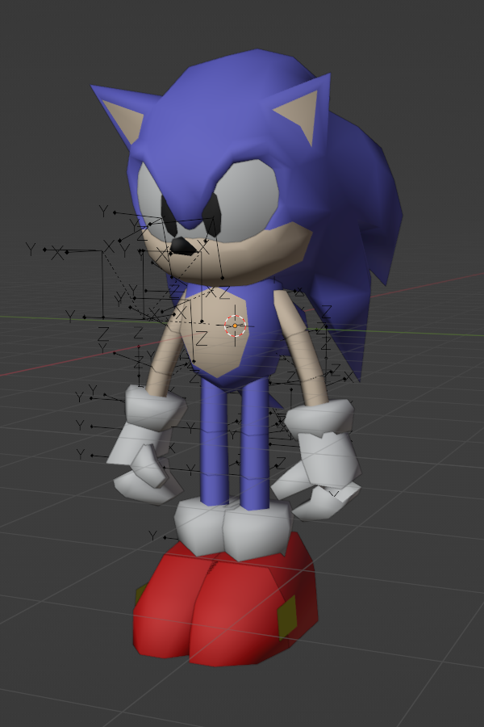
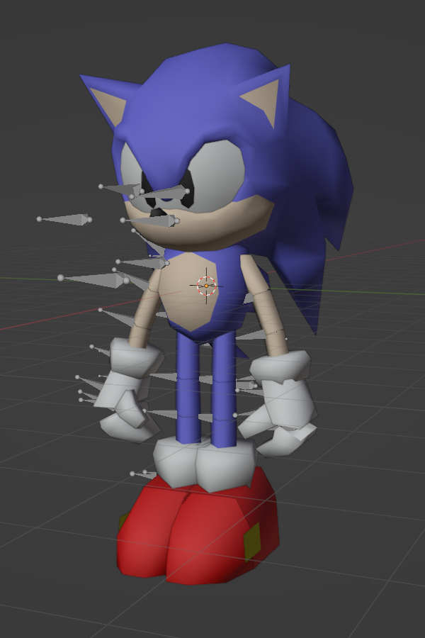
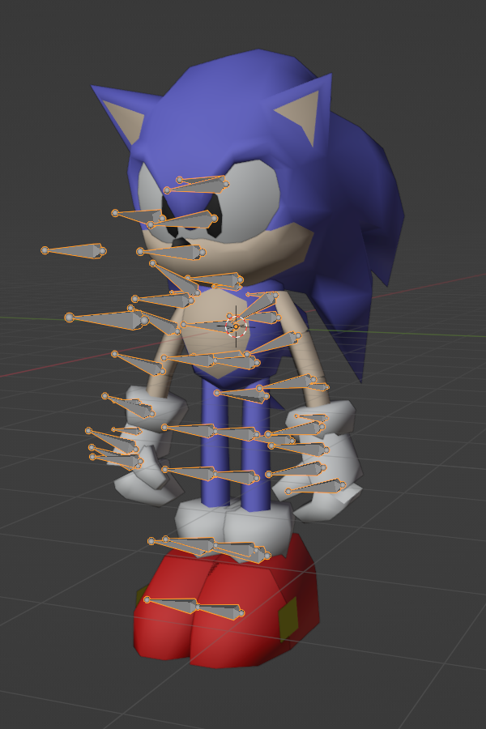
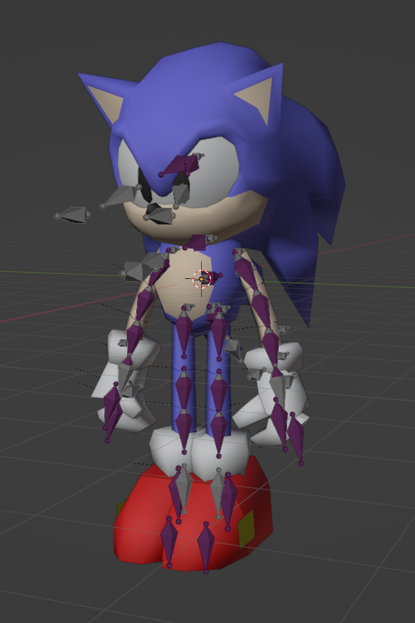
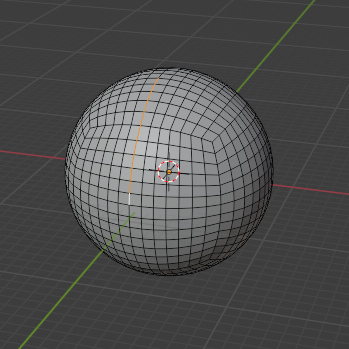
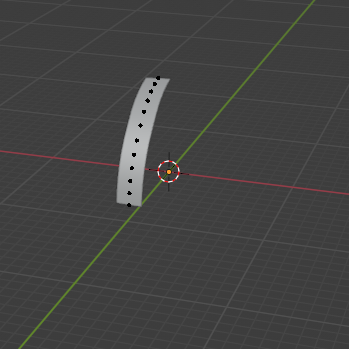

Utilities🔗︎

Various utilities to assist you and perform various tasks.
Auto Node Attributes🔗︎
Evaluates automatically determinable node attributes for all targeted nodes.
More info here.
Select Mode: Determines which objects to target.All: All objects and bones in the file.Scene: All objects and bones in the scene.Visible: Only the visible objects (and bones).Selected: Only the selected objects/bones.
Armature from objects🔗︎
Creates an armature setup from an object hierarchy. Use this when you need to import animations to a model that was not imported or created with an armature.
Simply select the root of the object hierarchy that you want to convert and press the button.
|  | → |
 |
Merge Meshes: Merges all meshes to one for imported armatures.
Correct Armature Visuals🔗︎
Updates the bones of an armature with display models, layers and colored groups.
|  | → |
 |
Bone Shapes: Assigns each bone a shape to display the rotations in a more "correct" way.Bone Groups: Assign each bone a bone group with a distinct color based on how they affect the meshes.Bone Layers: Set up bone layers based on how they affect the meshes. Default layer will keep all bones.
Generate Path🔗︎
Generates a path from the selected edge loop. Only available while editing meshes.
|  | → |
 |
Create Camera setup🔗︎
Creates a new camera object setup that can be used for importing and exporting camera animations.
Copy Vertex indices to clipboard🔗︎
Copies the indices of selected vertices to the clipboard. Must be in edit mode to execute.
Useful for creating SA1 models with welding.
Bake Node Animation🔗︎
Simulates an export and import of a node animation. This will let you experiment with the various parameters in realtime and directly view the results and how the animation would look ingame.